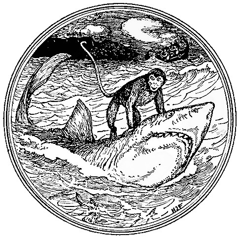

Gezgin masallarından başka, mucizelerin meydana gelişini açıklamak için Rüya mekanizmasını, yani bizzat insan uykusundaki rüyayı kullanan her öyküyü de hariç tutarım. En azından, anlatılan rüya kendi içinde diğer yönlerden bir peri masalı olsa bile, öykünün tamamını esasta hatalı olarak sayardım: çarpık bir çerçevede duran başarılı bir resim gibi. Rüya'nın Periler Diyarı'yla bağlantısız olmadığı doğrudur. Rüyalarda aklın garip güçleri ortaya çıkar. Bazı rüyalarda insan bir süre için Periler Diyarı'nın gücünü eline geçirebilir, o güç ki öykünün, tasarlandığı anda kişinin gözleri önünde canlı bir şekil ve renk almasına neden olur. Gerçek bir rüya tam da görüldüğü sırada, bazen neredeyse elflere özgü bir kolaylık ve beceriye sahip bir peri masalı olabilir. Ama uykudan uyanan bir yazar size masalının sadece rüyasında düşlediği bir şey olduğunu söylerse, bilerek Periler Diyarı'nın kalbinde yatan asıl tutkuyu kandırıyordur: hayal edilmiş mucizenin, düşünen akıldan bağımsız olarak, farkına varmayı. Sık sık perilerin (doğru ya da yalan, bilmiyorum) hayal yaratıcıları oldukları, "fanteziyle" insanları kandırdıkları anlatılır; ama bu oldukça farklı bir mesele. Bu onların sorunudur. Her durumda bu çeşit oyunlar, perilerin kendilerinin bir hayalden ibaret olmadıkları masallarda gerçekleşir; bu fantezinin ardında, insanların zekâları ve amaçlarından bağımsız olarak, gerçek iradeler ve güçler yatar.
Her nasılsa gerçek bir peri masalının, bu biçimin daha düşük ve adileştirilmiş amaçlarla kullanışından ayrı olarak, "doğru" sunulması gerekmektedir. "Doğru"nun bu bağlamda anlamını biraz sonra ele alacağım. Ama bir peri masalı "mucizeler"le uğraştığı için, içinde geçen tüm öykünün uydurma ya da hayal ürünü olabileceğini akla getirecek herhangi bir çerçeve ya da mekanizmayı hoş göremez. Tabii ki masalın kendisi o kadar iyi olabilir ki insan çerçeveyi görmezden gelebilir. Ya da bir rüya öyküsü olarak başarılı ve eğlendirici olabilir. İşte rüya çerçeveleri ve rüya geçişleriyle Lewis Carroll'ın Alice öyküleri böyledir. Bu ve başka sebeplerden dolayı bu öyküler peri masalı sayılmazlar.{16}
"Peri masalı" başlığının dışında tutacak olduğum, yine kesinlikle sevmediğim için değil, mucizelerden bahseden başka bir masal türü daha vardır: basit bir şekilde söylersek hayvan fablları. Lang'in Peri Kitaplarından bir örnek alalım: Leylak Peri Kitabı'nda geçen Maymun'un Kalbi adlı bir Swahili masalı. Bu öyküde kötü bir köpekbalığı bir maymunu sırtına binmesi için kandırır, maymuna ülkesinin sultanının hasta olduğunu ve hastalığını iyileştirmek için bir maymun kalbine ihtiyacı olduğu gerçeğini açıklamadan, onu kendi ülkesine doğru yarı yola dek götürür. Ama maymun köpekbalığından daha kurnaz çıkar ve onu kalbinin geride, evinde bir ağaçta asılı duran çantada olduğuna ikna ederek geri döndürür.
Hayvan fabllarının tabii ki peri masallarıyla bir bağlantısı vardır. Gerçek peri masallarında, hayvanlar, kuşlar ve diğer yaratıklar, çoğunlukla insan gibi konuşurlar. Kısmen (genellikle az olarak) bu mucize Periler Diyarı'nın kalbinin yakınlarında yatan temel "tutkuların" birinden ortaya çıkar: insanların yaşayan diğer canlılarla paylaşım kurma tutkusundan. Ama ayrı bir tür olarak ortaya çıkmış olan hayvan fabllarındaki hayvanların konuşmasının, bu tutkuya göndermede bulunmasına nadir rastlanır ve çoğu zaman da tamamen unutulur. İnsanların; kuşların, hayvanların ve ağaçların konuştukları dilleri bir şekilde anlamaları, sihirli Periler Diyarı'nın gerçek amaçlarına çok daha yakındır. Ama hiçbir insanın bulunmadığı masallarda ya da kahramanların hayvanlar olduğu, erkek ve kadınların görünseler bile sadece ikinci dereceden yaratıklar oldukları öykülerde ve bütün bunların da üstünde, hayvan biçiminin sadece insanların yüzlerine geçirdikleri bir maskede, bir yergicinin ya da bir vaizin aracı olarak kullanıldığı öykülerde, biz hayvan fabllarına ulaşırız, peri masalına değil: bu ister Tilki Reynard; ister Rahibelerin Rahiplerin Masalı, ister Tavşan Brer ya da sadece Üç Küçük Domuz olsun. Beatrix Potter'ın{17} öyküleri Periler Diyarı sınırlarının yakınındadır, ama bence esasta dışında kalır.{18} Öykülerin yakınlıkları çoğunlukla güçlü ahlaki unsurları yüzündendir: ki bununla kastettiğim, onların doğalarında var olan ahlaklarıdır, herhangi alegorik bir signifıcatio (anlam) değil. Ama Tavşan Peter bir yasak içermesine ve Periler Diyarı'nda yasaklar olmasına rağmen (tıpkı tüm evrende, büyük ihtimalle her düzlemde ve her boyutta olduğu gibi) bir fabl olarak kalır.
İşte, Maymun Kalbi'nin de sadece bir fabl olduğu açıktır. Bu öykünün bir "Peri Kitabına" eklenmesinin başlıca nedeni, sanırım eğlendirici özelliğinden değil, geride bir çantada bırakılmış olması gereken maymun kalbi yüzündendir. Bu ilginç fikir burada sadece şaka olarak kullanılsa da, bir halkbilim öğrencisi olan Lang için önemliydi. Çünkü bu masalda maymunun kalbi oldukça normal ve göğsünün içindeydi. Yine de bu ayrıntı açıkça peri masallarında da çok sık geçen, eski zamanlardan kalma ve çok yaygın olan bir halkbilim özelliğinin sadece ikinci dereceden kullanımıdır.{19} Bu özellik, bir insan veya bir yaratığın yaşamının ya da gücünün, başka bir yer veya bir şeyde olabileceğini; bedenin bazı bölümlerinin (özellikle kalp) bir çantaya, bir taşın altına ya da bir yumurtanın içine konulabileğini iddia eder. Bu fikir, kaydedilmiş halkbilim tarihinin bir ucunda George MacDonald{20} tarafından, ana motifini (başka bir sürü ayrıntıyla beraber) tanınmış geleneksel masallardan alarak yazdığı peri masalı Devin Kalbi'nde kullanılmıştır. Diğer uçtaysa, yazıya dökülmüş en eski öykülerden olan ve Mısırlı D'Orsigny papirüsünde anlatılan İki Erkek Kardeşin Masalı'nda geçer. Öyküde küçük kardeş büyük olana şöyle der:{21}
Kalbime büyü yapacağım ve onu sedir ağacındaki çiçeğin üzerine yerleştireceğim. Sonra sedir ağacı kesilecek ve benim kalbim de yere düşecek; sen onu aramak için yedi yıl geçirsen de onu aramak için geleceksin, kalbimi bulduğunda, onu soğuk su dolu olan bir vazoya koy, ve ben de gerçekten yaşayacağım.
Ama bu noktada ilgi ve bu türden karşılaştırmalar bizi ikinci soruya yaklaştırıyor: "peri masallarının" kaynakları nedir? Bu tabii ki şu anlama gelmelidir: peri unsurlarının kaynağı ya da kaynakları. Öykülerin kaynağının ne olduğunu sormaksa (kişi ne kadar yetkin olursa olsun) dil ve aklın kaynağının ne olduğunu sormak demektir.

Lang'ın "Leylak Peri Masalı" Kitabından Maymunun Kalbi Masalı
(H. J. Ford)